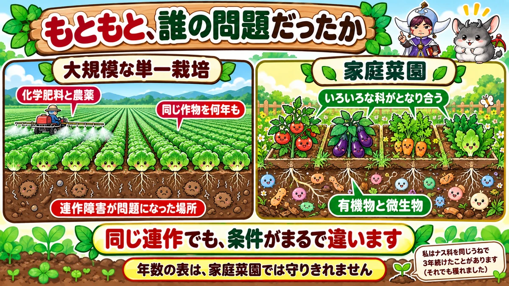
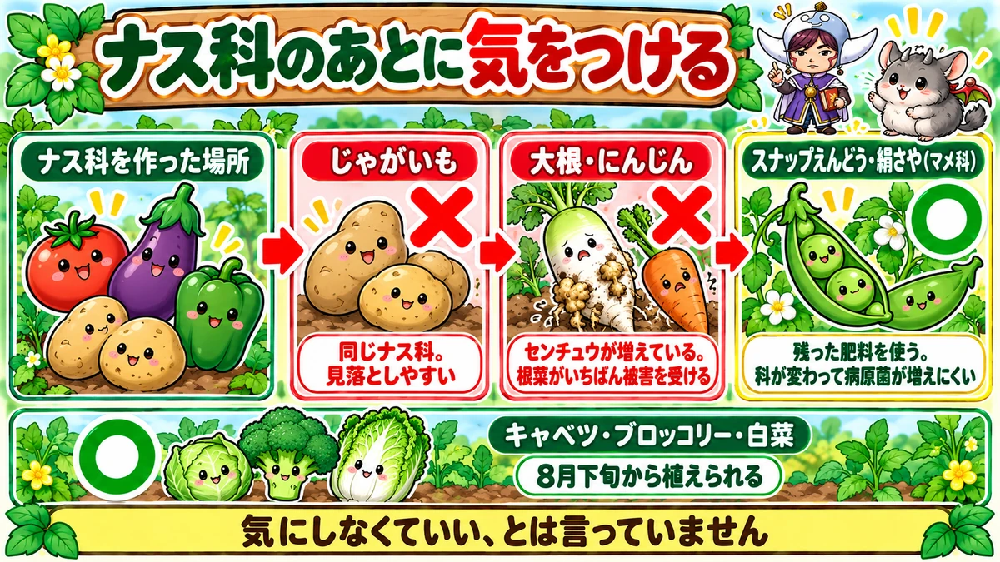
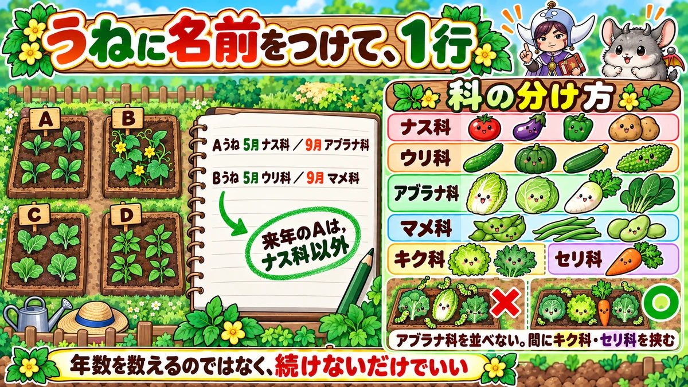

Forget the rotation table 🌱 Record the plant family, not the number of years

🌱 "I'm too nervous to plant in last year's spot."
🌱 "Every source gives a different number of years."
🌱 "I can't actually remember what was there last year."
Hello, I'm Eiko. Eight years of growing vegetables organically and without pesticides, and a teaching licence in science.
Today isn't about a vegetable — it's about where you put it.
In article after article I've written things like "it's a cucurbit, so leave two or three years before that spot again." A lot of you will have read that and thought: my garden isn't that big.
So, the most important line first:
You don't have to keep to those numbers.
Do one thing instead: write down which plant family was there last 🌱
What "replant problems" actually are
Two things are happening
Grow the same vegetable in the same place repeatedly and it does worse. Two separate causes:
- The soil gets lopsided — the same crop takes up the same nutrients
- Pathogens and pests build up — whatever likes that crop moves in and stays
The usual advice
- Legumes — leave 4–5 years
- Nightshades — 3–4 years
- Cucurbits — 2–3 years
- Brassicas — 1–2 years
I've printed that table myself. And this is exactly where everyone stops.
That table is unworkable
The vegetables people want are concentrated in two families
Look at what's in them. Nightshades: tomato, aubergine, pepper, potato. Legumes: edamame, beans, peanut, broad bean, pea.
Almost everything a home gardener actually wants to grow sits in those two. Avoid each for 3–5 years and the list of things you're allowed to plant shrinks every season.
It didn't work in my garden
I have four beds. Four beds and a four-year gap for nightshades means one bed of nightshades a year — when I want tomatoes and aubergines and peppers. The plan collapsed in year two 😅
Why it's less frightening than it sounds

What this diagram says （図解の文字）
- Where replant problems became a problem: large-scale monoculture ／ chemical fertiliser and pesticides ／ the same crop for years
- A home garden: several plant families side by side ／ organic matter and microbes
- "Same 'growing it again', completely different conditions."
- "The year tables can't be kept to in a home garden."
- "I grew nightshades in the same bed three years running."
Whose problem was it originally?
This is the part worth knowing. Replant problems became a serious issue in large-scale agriculture — one crop across a whole field, for years, on chemical fertiliser and pesticides. That's the setting where it showed up plainly.
A home garden is not that
- Several different families growing side by side in a small space
- Small area, with weeds and other plants all around it
- Organic matter going in, and a soil with microbes living in it
The conditions are not comparable. So I don't treat it as something that will happen.
What happened in my garden
Honestly: I grew nightshades in the same bed three years running. They grew. I think fruit set dropped slightly in the third year, but nothing like a failure.
That's my garden. I can't promise it for yours. But "absolutely not" isn't true either.
These two, though, I do avoid

What this diagram says （図解の文字）
- Title: "After nightshades, watch out"
- ✗ Potato — "also a nightshade. Easy to miss"
- ✗ Daikon / carrot — "nematodes have built up. Root crops take the worst of it"
- ○ Snap peas / mangetout (legumes) — "they use up the fertiliser that's left, and the family changes so pathogens don't build"
- ○ Brassicas
① Potatoes after nightshades
Potatoes are nightshades. Putting them where tomatoes, aubergines or peppers just were is growing the same family again. People miss this constantly — potatoes get filed mentally as their own thing.
② Daikon or carrots after nightshades
This is the one that does real damage. Soil that has grown nightshades can have a build-up of root-knot nematodes, and the crops that show nematode damage most clearly are root vegetables. You get galls on the root and it won't run straight. You find out when you pull it.
What does follow nightshades well
Legumes. Two reasons:
- They use up the fertiliser the tomatoes and aubergines didn't take
- The family changes, so soil pathogens don't keep building
Snap peas or mangetout slot straight in after you clear the nightshades. Cabbage, broccoli and Chinese cabbage are good followers too.
All you have to do is write it down

What this diagram says （図解の文字）
- Title: "Name the beds, then one line each"
- Beds A / B / C / D. "Bed A: nightshades in late spring ／ brassicas in autumn" ／ "Bed B: cucurbits ／ legumes"
- "Next year, bed A gets anything except nightshades."
- The families: nightshades ／ cucurbits ／ brassicas ／ legumes ／ daisy family ／ carrot family
- ✗ "don't line brassicas up next to each other — put a daisy- or carrot-family crop between them"
- "Don't count years. Just don't repeat."
The only thing to memorise is the families
- Nightshades — tomato, aubergine, pepper, potato, chilli
- Cucurbits — cucumber, squash, courgette, watermelon, bitter melon
- Brassicas — Chinese cabbage, cabbage, broccoli, daikon, turnip, komatsuna
- Legumes — edamame, beans, peanut, broad bean, pea
- Daisy family — lettuce, shungiku, burdock
- Carrot family — carrot, parsley, celery
- Alliums — onion, spring onion, garlic
- Grasses — sweetcorn
- Mallow family — okra
- Amaranth family — spinach
Name your beds
This is all I do. Label the beds A, B, C, D and write one line in a notebook: "Bed A: nightshades in spring / brassicas in autumn."
Next year I look at that line and decide: "A had nightshades, so this year it's cucurbits or legumes."
Not counting years — just not repeating. That's enough to keep it turning.
Don't line the brassicas up
A practical one. Brassicas planted next to each other collect pests. Chinese cabbage, cabbage, broccoli, komatsuna — the same insects like all of them, so planting them together means losing all of them.
Put a lettuce or a carrot between them. It isn't rotation exactly, but the effect is immediate — it visibly cut the number of caterpillars in my garden.
The smaller the garden, the more you can rotate
A small plot feels impossible to rotate. In fact a small plot rotates through the seasons.
Potatoes (spring) → an edible leaf for high summer → a short daikon (autumn). Three crops a year, three different families, in the same square of ground. That is a rotation.
🔬 The science: soil rights itself
What happens when pathogens build up?
Grow the same crop repeatedly and its pathogens increase. No surprise there. But do they keep increasing forever?
They don't.
When something increases, something that eats it follows
As the pathogen population grows, the microbes that suppress it grow too. More food means more of whatever eats it — obvious once said.
The result is that disease can become less severe over time. It's a documented effect: the soil becomes suppressive.
The same happens with insects
Think about the insects in a garden. Pests increase, and so do the things that eat them — ladybirds, spiders, mantises. And most of the insects in a garden are neither pests nor predators; they're just there.
A garden where only the pests increase is actually an unnatural state.
Which is why soil-building beats rotation tables
Here's the conclusion. A soil with plenty of microbes in it pulls itself back into balance.
Rather than staring at a table of years, put leaf mould and compost in and make a soil that microbes can live in. The best defence against replant problems turns out to be soil-building ☺️
To sum up
- ✅ Replant problems = lopsided nutrients + pests and pathogens building up
- ✅ The year tables exist, but a home garden can't keep to them
- ✅ They come from large-scale monoculture — a different situation entirely
- ✅ But don't put potatoes after nightshades (same family)
- ✅ And don't put daikon or carrots after nightshades (nematodes)
- ✅ Legumes follow nightshades well; so do brassicas
- ✅ Memorise the families, not the years
- ✅ Name the beds and write one line a season
- ✅ Don't line brassicas up — put a daisy- or carrot-family crop between
- ✅ A small plot rotates through the seasons, three families a year
- ✅ The strongest measure of all is soil with living microbes in it
You don't have to do all of it. Name your beds and write one line about what's in them now. Next year's you will be grateful 🌱
Thank you for reading!